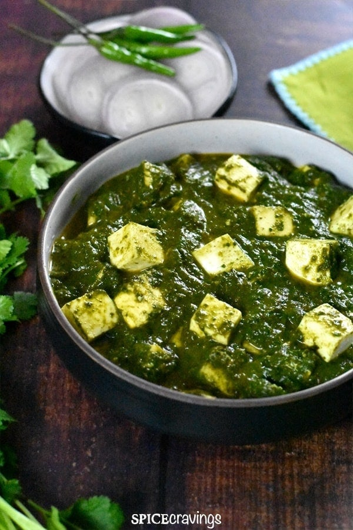

Palak Paneer

Description of Pizza
Palak paneer is a vegetarian dish, consisting of paneer in a thick paste
made from puréed spinach, called palak in Hindi, Marathi, Gujarati, and
other Indian languages.
Ingredients
- Palak
- Diced paneer
- Tomotoes, Onion, Ginger and Garlic
- Paneer masala
- Spices
Steps
- Steam the palak leaves and make its paste
- make paste of chopped tomatoes, an onion, a small slice of ginger and few cloves of garlic
- Take a pan, and add spices
- Combine all the pastes and add diced paneer
- Let it cook for 10min